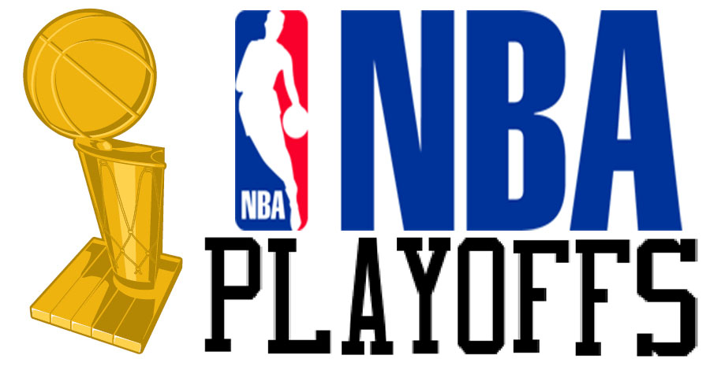
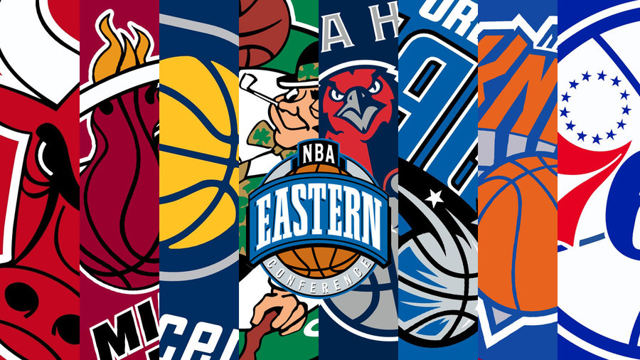
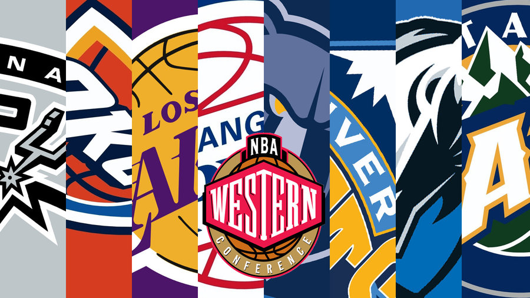

The Longest Current Playoff Droughts
These teams have missed the playoffs for an extended period of time for various reasons, be it injuries, poor drafting, or lack of free agents. It must be terrible to be a fan of these teams. :'(
Minnesota Timberwolves ---------- 10 YEARS
Sacramento Kings -------- 8 YEARS
Detroit Pistons ----- 5 YEARS
Phoenix Suns ---- 4 YEARS
Cleveland Cavaliers ---- 4 YEARS